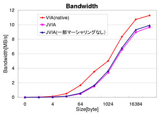

評価環境として、松岡研究室で開発されているPresto Cluster、 PentiumII 350MHz32台構成を用いた。各ノードのメモリは128MBで 2系統の100MbpsのFastEthernetでSwitch接続されている。このシステムは、OSがLinux 2.2.14、VIAの実装であるM-VIA 1.0を用いている。なお、M-VIAは2系統あるネッ トワークのうち1系統のみで利用可能となっている。 コンパイラはgcc 2.95.2を用い、最適化のオプションは ``-O6 - fomit-frame-pointer ''とした。
VIAをJavaから利用するJVIAの基本性能としてJVIAのレイテンシとバンド幅を測 定した(表 4.1)。 これをC言語でのnativeなVIAと比較すると(表 4.2)、 サイズが小さいときにレイテンシがJVIAの方が非常に大きく、サイズが大きくな るにしたがって、差が小さくなっているのが分かる。また、バンド幅でみると、 同じようにサイズが小さいときにはJVIAの方が小さいが、サイズが大きくなるに したがって、nativeのVIAのバンド幅近く出ているのが分かる。
| サイズ | レイテンシ(usec) | バンド幅(MB) |
|---|---|---|
| 0 | 125.5 | 0.0 |
| 1 | 124.5 | 0.0080 |
| 4 | 125.0 | 0.032 |
| 16 | 131.0 | 0.122 |
| 64 | 133.0 | 0.481 |
| 256 | 168.5 | 1.519 |
| 1024 | 301.0 | 3.402 |
| 4096 | 625.0 | 6.554 |
| 16384 | 1825.0 | 8.97 |
| 32000 | 3310.0 | 9.66 |
| サイズ | レイテンシ(usec) | バンド幅(MB) |
|---|---|---|
| 0 | 30.238 | 0.000 |
| 1 | 31.279 | 0.031 |
| 4 | 31.253 | 0.127 |
| 16 | 31.385 | 0.509 |
| 64 | 38.636 | 1.656 |
| 256 | 72.491 | 3.531 |
| 1024 | 204.680 | 5.002 |
| 4096 | 490.276 | 8.354 |
| 16384 | 1526.766 | 10.731 |
| 32000 | 2835.135 | 11.286 |
レイテンシがこのように大きい原因は、Java側で持っているデータ構造である VIP_DESCRIPTORのnativeへのマーシャリングによるものである。この VIP_DESCRIPTORは内部に VIP_DESCRIPTOR_SEGMENT、さらに VIP_CONTROL_SEGMENTや\\VIP_ADDRESS_SEGMENT、VIP_DATA_SEGMENTさらに VIP_PVOID64など、データ構造が深い。このため、データのマーシャリングに多 くの時間が化かってしまっているためである。また、JVIAの実装では、バッファ データをJavaからnativeのバッファへのコピーが1回行われてしまうため、これ もオーバーヘッドの要因でもある。 このVIP_DESCRIPTORのマーシャリングがオーバーヘッドとなっていることを確 認するため、VIP_DESCRIPTORのマーシャリングを一部(25\%)行わないでレイテンシと バンド幅を計測した(表 4.3)。
| サイズ | レイテンシ(usec) | バンド幅(MB) |
|---|---|---|
| 0 | 102.0 | 0.0 |
| 1 | 106.5 | 0.0094 |
| 4 | 106.0 | 0.0377 |
| 16 | 106.5 | 0.150 |
| 64 | 114.0 | 0.561 |
| 256 | 155.0 | 1.651 |
| 1024 | 280.5 | 3.650 |
| 4096 | 601.0 | 6.815 |
| 16384 | 1760.5 | 9.306 |
| 32000 | 3226.0 | 9.919 |
これから、サイズが小さい場合、レイテンシが大幅に向上していることが分かる。 つまりVIP_DESCRIPTORのマーシャリングを極力行わないことが有効であること が判明したが、VIP_DESCRIPTORのマーシャリングを行わないと正常な通信が行 えないため、通信を行う場合に必要なデータ、更新されるデータのみにしぼって マーシャリングを行う必要がある。しかし、サイズが大きい場合、あまり性能が 改善されていない(図 4.1, 4.2)。 これは、サイズが大きい場合、通信用のバッファをnativeからJava側へのコピー のオーバーヘッドが大きいためと考えられる。そこで、サイズの大小によらず、 Java側で扱うデータ構造を改良し、データ領域をpinningして、native側より直 接扱うような改良を行うことも必要である。
|  |
|---|
次に、SPLASH2からLU KernelをJava言語へ移植し、その性能を評価した。
LU Kernelを分散共有メモリ機能なし(1ノード)で動作させた場合、PCクラスタで は36.1秒である。まず、行列サイズ512の場合(表 4.4)、4 ノード以上では正常な性能が得られなかった。この原因としては、JDSMシステム は配列オブジェクトの配列要素ごとの共有機能を提供しているが、これは1次元 配列に限ったものである。LU Kernelのように、2次元配列を扱う場合、1次元目 は各要素ごとに共有することが可能であるが、2次元目以降は各要素ごとには管 理できない。このため、メモリの管理単位が8byte * 512 = 4KB 以上と管理単位 が大きくなってしまったため、False Sharingが多発してしまったと考えられる。 これに対しては、管理可能な配列の次元数を増やすことが考えられるが、全ての 次元数に対応することは難しい。そこで、現実的に3次元程度までは効率よく管 理できるようにすべきであることが分かった。また、通信インタフェースJVIA において、データのマーシャリングのオーバーヘッドが指摘されている。これも 分散共有メモリ機能の性能低下の要因であるとも考えられる。なお、2ノードで は1ノードより若干性能が低下しているのが分かる。これは並列化による性能向 上が分散共有メモリのオーバーヘッドによって相殺されているためである。
| プロセッサ数 | 実行時間(sec) |
|---|---|
| 1 | 40.5 |
| 2 | 61.1 |
また、行列サイズが小さい場合、並列化の効果が得られないが、参考までに行列 サイズを32まで小さくした場合の結果を\figref{fig:eval:jdsm:lu}にしめす。 グラフから分かるように台数が増えるにしたがって性能が低下しているのが分か る。これは行列サイズが小さいため、並列化の効果よりも、並列化のオーバーヘッ ドが大きいためである。